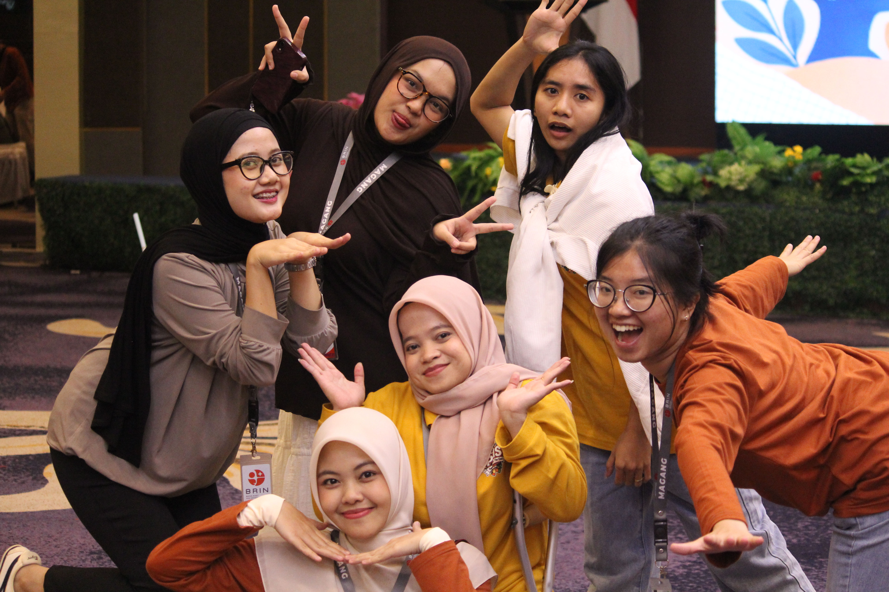

Saya memperoleh pemahaman bahwa komunikasi efektif adalah fondasi vital keberhasilan di dunia riset. Saya mempelajari prinsip 5C (Clarity, Conciseness, Consistency, Empathy, dan Feedback) dalam menyampaikan gagasan ilmiah secara jelas dan tepat sasaran.
Pelatihan ini melatih saya untuk berkomunikasi secara asertif—tegas menyuarakan ide dan batasan secara profesional dengan tetap santun. Selain itu, saya belajar memetakan keunikan tim lewat kecerdasan majemuk, menavigasi dinamika kelompok (Forming-Storming-Norming-Performing), mengelola konflik secara konstruktif demi inovasi bersama, serta menerapkan standar pelayanan prima yang responsif bagi seluruh stakeholder riset.
Saya memahami bahwa kontribusi terbaik bermula dari penyelarasan tindakan dengan visi, misi, dan integritas etika BRIN. Pelatihan ini menanamkan motivasi berprestasi (Need for Achievement) yang terarah melalui penetapan target kerja berbasis metode SMART, disiplin kerja yang konsisten, serta komitmen mutu tanpa kompromi.
Saya juga dibekali pola pikir berkembang (growth mindset) yang memandang kendala eksperimen sebagai sarana belajar dan inovasi. Pembelajaran ini memperkuat self-awareness, manajemen waktu, kemampuan regulasi stres dan emosi (stress & anger management) di bawah tekanan tenggat waktu riset, serta adaptabilitas tinggi menghadapi dinamika perubahan lingkungan riset nasional.
Kedua pelatihan mandiri ini memberikan bekal soft skills dan penguatan mentalitas yang sangat esensial bagi saya selama menjalani rangkaian program magang di BRIN. Saya menyadari bahwa kompetensi riset yang unggul harus ditopang oleh kematangan emosional, karakter integritas ilmiah yang kokoh, serta kecakapan berkolaborasi lintas disiplin.
Satu lembar refleksi ini menjadi pengingat komitmen saya untuk senantiasa bertumbuh, proaktif, dan solutif dalam menghadapi setiap tantangan kerja. Saya termotivasi untuk mengimplementasikan seluruh nilai integritas, komunikasi asertif, dan etos kerja produktif demi menghadirkan kontribusi nyata bagi ekosistem riset dan kemajuan bangsa.
"INOVASI BERMAKNA LAHIR DARI INTEGRITAS DIRI, KOMUNIKASI TERBUKA, DAN KOLABORASI TANPA HENTI."